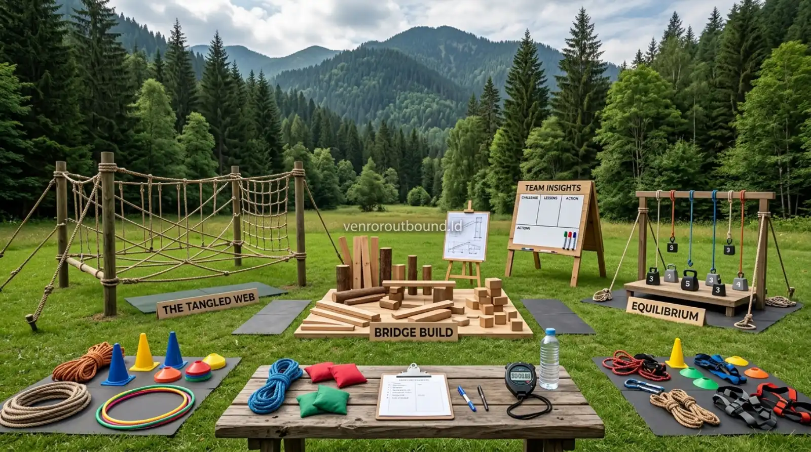

Bagi para Director of Learning & Development (L&D), Chief Human Resources Officer (CHRO), serta praktisi People & Culture di berbagai korporasi, merancang program pengembangan kepemimpinan yang efektif merupakan tantangan strategis tahunan. Pertanyaan mendasar yang kerap muncul saat sesi perencanaan kurikulum adalah: apakah kompetensi kepemimpinan cukup dipelajari melalui pemaparan presentasi slide dan diskusi ruang kelas ber-AC, ataukah organisasi memerlukan media pelatihan luar ruang berbasis pengalaman langsung?
Kedua pendekatan tersebut sesungguhnya memiliki keunggulan dan keterbatasan masing-masing. Memilih format pelatihan yang tepat bukanlah persoalan mencari metode mana yang secara mutlak lebih unggul, melainkan menyesuaikan pendekatan pedagogis dengan tujuan pembelajaran (learning objective), profil kematangan peserta, konteks tantangan organisasi, alokasi waktu, serta target perubahan perilaku yang diharapkan.
1. Apakah Leadership Cukup Dipelajari Melalui Teori dan Diskusi Kelas?
Outdoor experiential leadership training memberikan pengalaman belajar yang lebih aktif karena peserta tidak hanya menerima materi, tetapi juga menghadapi simulasi, berinteraksi, mengambil keputusan, dan melakukan refleksi. Metode ini dapat membantu menghubungkan konsep kepemimpinan dengan situasi nyata, terutama ketika skenario dirancang sesuai tujuan pembelajaran.
Kepemimpinan pada hakikatnya bukan sekadar seperangkat pengetahuan deklaratif (knowing what), melainkan keterampilan perilaku terapan (knowing how) yang teruji dalam situasi tekanan sosial, ketidakpastian data, dan relasi antarpribadi. Ketika seorang leader hanya menerima ceramah teori di kelas, pemahaman kognitif mereka tentu bertambah. Namun, saat kembali ke meja kerja dan berhadapan dengan konflik tim atau target krisis, respons spontan yang muncul sering kali kembali pada pola kebiasaan lama.
Pembelajaran berbasis pengalaman dapat membantu peserta menghubungkan materi dengan situasi nyata sehingga pemahaman menjadi lebih kontekstual. Pengalaman langsung dan refleksi mendalam membantu memperkuat keterkaitan peserta terhadap materi yang dipelajari, menjadikannya jembatan yang kokoh antara wawasan teoritis dengan aksi nyata di lapangan kerja.
2. Karakteristik, Kelebihan, dan Keterbatasan Indoor Leadership Workshop
Indoor Leadership Workshop merupakan format konvensional yang diselenggarakan di ruang seminar, hotel, atau aula pelatihan internal. Format ini berfokus pada penguasaan kerangka berpikir manajerial, telaah studi kasus tertulis, asesmen psikometrik, dan perumusan target kerja.
Kelebihan Indoor Workshop:
- Kenyamanan Lingkungan & Konsentrasi Teori: Suhu ruangan yang terkontrol, pencahayaan optimal, dan ketiadaan faktor cuaca membuat peserta dapat berkonsentrasi penuh pada materi presentasi yang kompleks.
- Kemudahan Penggunaan Multimedia: Fasilitas proyektor, audio sistem profesional, dan integrasi perangkat digital memudahkan penyampaian data kuantitatif serta framework analitis.
- Efisiensi Waktu & Materi Terstruktur: Materi dapat disajikan secara padat dan sistematis sesuai silabus waktu yang telah dijadwalkan tanpa risiko gangguan logistik cuaca.
- Fasilitasi Diskusi Konseptual: Sangat ideal untuk sesi bedah studi kasus industri, perumusan Key Performance Indicators (KPI), dan sinkronisasi Standard Operating Procedures (SOP).
Keterbatasan Indoor Workshop:
- Simulasi Fisik dan Dinamika Spontan Terbatas: Interaksi kelompok cenderung formal dan terstruktur, sehingga perilaku defensif atau topeng sosial peserta sulit terbuka.
- Kejenuhan Kognitif (Cognitive Fatigue): Duduk mendengarkan materi selama berjam-jam rentan menurunkan tingkat atensi peserta di sesi siang hari.
- Kesenjangan Aksi (Knowing-Doing Gap): Memahami teori manajemen kepemimpinan belum tentu terkonversi menjadi tindakan spontan saat menghadapi krisis di dunia nyata.
3. Karakteristik, Kelebihan, dan Keterbatasan Outdoor Experiential Leadership
Outdoor Experiential Leadership Training membawa proses pembelajaran ke alam terbuka dengan memanfaatkan simulasi bertingkat, tantangan kelompok, dan dinamika medan alami. Dalam konteks outbound leadership training profesional, alam terbuka dijadikan laboratorium perilaku di mana setiap tantangan menuntut kepemimpinan nyata, kolaborasi, dan pengambilan keputusan di bawah tekanan.
Kelebihan Outdoor Leadership Training:
- Keterlibatan Aktif Seluruh Panca Indera: Peserta terlibat secara fisik, mental, dan emosional, sehingga membangun keterikatan yang lebih mendalam terhadap proses pembelajaran.
- Dinamika Tim Terlihat Autentik: Dalam situasi tantangan luar ruang, batas hierarki jabatan mencair dan karakter asli peserta dalam memimpin, mendelegasikan, atau menyelesaikan konflik terlihat secara transparan.
- Refleksi Lebih Kontekstual: Evaluasi dilakukan atas tindakan nyata yang baru saja dialami, bukan sekadar opini atau hipotesis di atas kertas.
- Penyegaran Mental (Refreshing): Berada di lingkungan hijau yang segar membantu melepaskan kejenuhan rutinitas kantor dan membangun kedekatan emosional antarrekan kerja.
Keterbatasan Outdoor Leadership Training:
- Ketergantungan pada Faktor Alam: Cuaca hujan lebat atau panas terik memerlukan kesiapan mitigasi rencana kontinjensi (Plan B).
- Kebutuhan Manajemen Risiko yang Disiplin: Memerlukan survei lokasi, kelaikan peralatan, dan standar K3 yang ketat.
- Kebutuhan Fasilitator yang Sangat Kompeten: Keberhasilan program sangat bergantung pada kemampuan fasilitator dalam memandu debriefing agar kegiatan tidak berhenti sekadar permainan fisik.

4. Tabel Perbandingan Head-to-Head: Indoor vs Outdoor
Berikut adalah perbandingan mendalam sembilan dimensi utama antara indoor leadership workshop dan outdoor experiential leadership training:
| Faktor Penilaian | Indoor Leadership Workshop | Outdoor Experiential Leadership |
|---|---|---|
| Lingkungan Belajar | Ruang tertutup, suhu terkontrol, minim gangguan fisik | Alam terbuka, dinamis, udara segar, stimulasi alami |
| Metode Utama | Presentasi konseptual, studi kasus tertulis, diskusi meja | Experiential learning, simulasi taktis, action-reflection |
| Interaksi Peserta | Terstruktur, formal, diskusi kelompok terarah | Spontan, intens, mencairkan batas hierarki struktural |
| Bentuk Simulasi | Roleplay skenario bisnis, analisis dokumen, kuis logika | Tantangan pemecahan masalah fisik & strategi skala penuh |
| Visibilitas Team Dynamics | Terbatas pada argumen verbal dan komunikasi formal | Sangat transparan memperlihatkan perilaku asli di bawah stres |
| Kedalaman Refleksi | Refleksi konseptual berbasis penalaran analitis | Refleksi pengalaman emosional dan perilaku nyata di lapangan |
| Fleksibilitas Desain | Tinggi untuk penyesuaian materi slide dan waktu | Tinggi untuk variasi simulasi bertingkat dan custom skenario |
| Risiko Operasional | Sangat rendah, tidak terpengaruh dinamika cuaca | Memerlukan mitigasi K3, survei medan, dan SOP keselamatan |
| Kecocokan Sasaran | Transfer teori baru, compliance, perumusan target KPI | Pembentukan karakter, sinergi tim, agility, crisis leadership |
5. Kerangka Kerja Experiential Learning: Experience → Reflect → Conceptualize → Apply
Salah satu alasan mengapa kegiatan luar ruang memberikan dampak perubahan perilaku yang kuat adalah berjalannya siklus belajar eksperiensial secara utuh:
- Concrete Experience (Pengalaman Nyata): Kelompok dihadapkan pada rintangan strategi di mana tidak ada petunjuk tunggal yang mutlak benar. Setiap orang terdorong untuk bertindak dan merasakan dinamika kelompok secara langsung.
- Reflective Observation (Observasi & Refleksi): Fasilitator memfasilitasi sesi debriefing yang aman. Peserta diajak melihat kembali pola pengambilan keputusan mereka: Siapa yang mendengarkan? Mengapa terjadi kebingungan arah? Apa dampak emosi leader terhadap tim?
- Abstract Conceptualization (Konseptualisasi Prinsip): Peserta merumuskan prinsip kepemimpinan yang relevan berdasarkan apa yang mereka temukan sendiri dari tantangan tersebut.
- Active Experimentation (Penerapan Tindakan Nyata): Prinsip yang dirumuskan diuji kembali pada simulasi berikutnya, lalu dikomitmenkan ke dalam rencana aksi kerja konkret di kantor.
6. Penyesuaian Program untuk Level Manajer Senior & Eksekutif
Sebagian pimpinan HR mungkin bertanya: apakah simulasi outdoor pantas untuk level manajer senior, kepala divisi, atau jajaran direksi? Jawabannya adalah sangat cocok, dengan catatan desain program harus disesuaikan secara cermat dengan tingkat kematangan intelektual mereka.
Untuk level eksekutif, simulasi tidak lagi berfokus pada aktivitas fisik yang melelahkan, melainkan pada simulasi strategis tingkat tinggi seperti:
- Strategic Decision Making under Uncertainty: Menghadapi skenario krisis pasar dengan data yang terbatas dan waktu yang bergerak cepat.
- Cross-Functional Resource Allocation: Mengelola negosiasi alokasi anggaran dan SDM antardepartemen tanpa menimbulkan persaingan internal yang destruktif.
- Crisis Leadership & Stakeholder Management: Menguji ketenangan komunikasi pimpinan saat terjadi perubahan regulasi eksternal mendadak.
- Silo-Busting & Trust Building: Membangun rasa saling percaya dan keterbukaan di antara para kepala divisi yang memimpin lini bisnis berbeda.
7. Decision Matrix: Kapan Memilih Indoor, Outdoor, atau Pendekatan Hybrid?
Untuk mempermudah manajemen L&D dalam mengambil keputusan investasi pelatihan, gunakan matriks rekomendasi berikut:
| Kebutuhan Pengembangan Organisasi | Metode yang Lebih Relevan | Catatan Pertimbangan Kurikulum |
|---|---|---|
| Pengenalan Konsep & Teori Leadership Baru | Indoor Workshop | Fokus pada pemaparan materi, framework analitis, dan Q&A |
| Bedah Studi Kasus Finansial & Bisnis | Indoor Workshop | Memerlukan akses data laptop, spreadsheet, dan ketelitian angka |
| Pencairan Silo & Peningkatan Trust Antardivisi | Outdoor Experiential Training | Tantangan kolaboratif efektif membongkar ego fungsional |
| Melatih Pengambilan Keputusan Krisis (Agility) | Outdoor Experiential Training | Simulasi tekanan waktu melatih ketenangan emosional lapangan |
| Refleksi Nilai Budaya Perusahaan (Core Values) | Keduanya / Hybrid | Teori nilai dibahas di kelas, dihidupkan dalam aksi outdoor |
| Penyusunan Action Plan & Roadmap Strategis | Indoor / Hybrid | Hasil pembelajaran outdoor dirangkum ke dalam komitmen formal |
Rancang Program Kepemimpinan Berdampak Nyata
Rancang program kepemimpinan outdoor yang berdampak nyata. Chat tim kami di +62 82211221909.
Konsultasi Kurikulum via WhatsApp8. Kesimpulan & Rekomendasi untuk Divisi L&D
Tidak ada dikotomi kaku yang menempatkan satu metode selalu lebih unggul dibanding metode lainnya. Indoor workshop dan outdoor experiential leadership saling melengkapi dalam ekosistem pembelajaran korporasi yang holistik. Banyak organisasi terkemuka kini memilih pendekatan Hybrid Leadership Program—di mana pemahaman teori dan alignment strategi dilakukan di dalam ruangan, kemudian diuji secara intensif melalui simulasi rintangan di alam terbuka.
Melalui perencanaan kurikulum yang matang bersama provider outbound leadership training yang kompeten, perusahaan dapat memastikan bahwa setiap rupiah anggaran pelatihan menghasilkan dampak nyata terhadap kematangan kepemimpinan, soliditas tim, dan ketahanan organisasi dalam menghadapi dinamika masa depan.
Pertanyaan Sering Diajukan (FAQ)

Arby Ardiansyah
Arby Ardiansyah adalah praktisi pembelajaran luar ruang yang berpengalaman dalam merancang modul experiential leadership, team building, dan kurikulum pengembangan talenta manajerial di Indonesia.